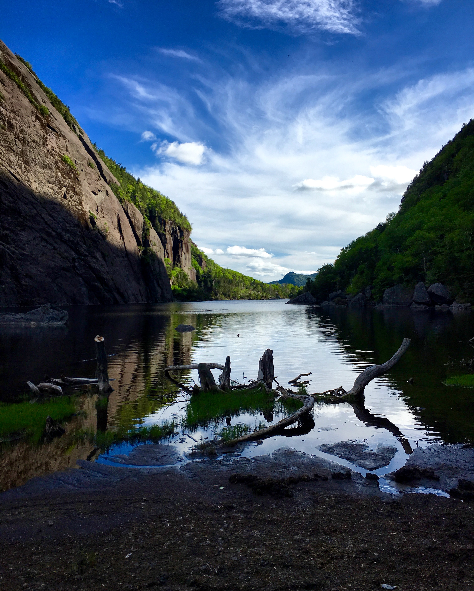

June 10 2016
Where?
- Adirondacks High Peaks Region / North Elba, NY
What?
- Wright
- Algonquin
- Iroquois
Who?
- Devon
- Mike
- Randy
- Russ
Weather
- Sunny / Clear
- Mid to upper 60s F
Trip Report
The official start of my journey to become a 46r. We stayed in Jay, NY at the Cayuga Cabin. We woke up early, ate breakfast and started to make our way towards the Loj, arriving at the parking lot around 8 am. After a quick bathroom break and sign-in at the register, we made our way on the Van Hoevenberg Trail for a short walk before reaching the Algonquin Trail.
We made it to Macintyre falls around 9:20 AM to take our first break and eat a snack. Continuing on to our first peak of the day, Wright. This was our first taste of a high peak and being above the treeline. Quite a feeling to come out of trees that keep shrinking in size, suddenly exposed to the environment around you. I hiked Snowy Mountain some years prior to this, and the view here blew that away. We reached the summit around 10:40 AM. Being the first time on a high peak, we spent 40-60 minutes just enjoying the view. It was a perfectly clear day.
Wright Peak is known for a plane crash that happened in 1962 - a B-47 bomber on a training mission slammed into the top of the mountain. We dropped down to take a look at the plaque, the wreckage remains up there to this day.
We soon made our way off of Wright to meet with Randy and Russ and continue our way up to Algonquin, reaching the summit at around 12:20 PM. The views from atop the 2nd highest mountain in NY State were incredible and the day was perfect to match. We spent a good hour on the peak, had a celebratory beer, and just took it all in.
Leaving Algonquin at 1:35 we started our trek towards Iroquois - an often orphaned peak. Once we reached the herd path we encountered two hikers returning who estimated to us that it would be a 2 hour round trip to Iroquois. Sizing them up, Devon, Mike, and I realized they were not in the running shape we were at the time. We dropped our bags and set out on a mission.
Half an hour later, we were on top of Iroquois and reaching our third and final peak for the day. The herd path was super easy to follow, better than some actual trails. Knowing we were burning daylight, we made our way back, finishing the out-and-back in roughly an hour.
Meeting back with Randy and Russ at the start of the herd path connected to the Algonquin Trail, we decided we would descend the Algonquin trail to Avalanche lake and return to the loj that way. In retrospect, this was a terrible idea. However, in reality - what came next would cement this trip as a memorable one for all of us.
The grade of the Algonquin trail slowed us down a bit, but we finally made it to the Lake Colden trail, which meant all of our major elevation changes were done for the day. I reached the junction first and was the first to read the sign that read “Loj, 5.7 miles”. This greatly demoralized Randy and Russ who could only laugh maniacally about what was ahead of us.
This overwhelming dread was quickly washed away as we entered Avalanche Pass and were greeted by one of the most beautiful locations in the United States - Avalanche Lake. We could only admire its beauty. At this point it was also 5 PM - daylight was running out.

Avalanche lake is known for some interesting features, the rock scrambles and the hitch up matildas that are literally bolted into the side of the mountain. At this point of the day, we were all exhausted. Our water was running low, daylight was fading, and the bugs decided it was time to make an appearance adding a layer of frustration to everything.
Continuing our trek towards Marcy Dam, we were making foolish mistakes - separating on the trail out of desperation to keep moving. Eventually resulting in us losing Mike, who somehow started to ascend the Van Hoevenberg trail towards Phelps Mountain.
I finally exited the trail around 8 pm that day. Mike came running out of the trail about 15 minutes later, right before the point where we were about to consider how we were going to find him.
The day ended back at the cabin, grilling food and drinking copious amounts of beer to ease our aching muscles. Roughly 16 miles over 4k feet in elevation changes.
Note: We were woefully unprepared for this trip. Looking back, we were idiots for not carrying: a map, water purification, and some other key items. We also should have never separated on the trail like we did.